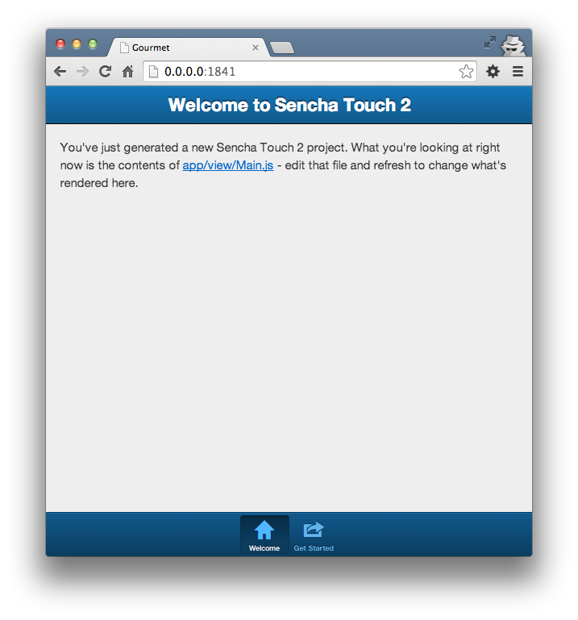
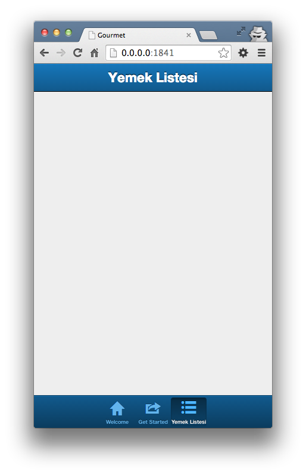
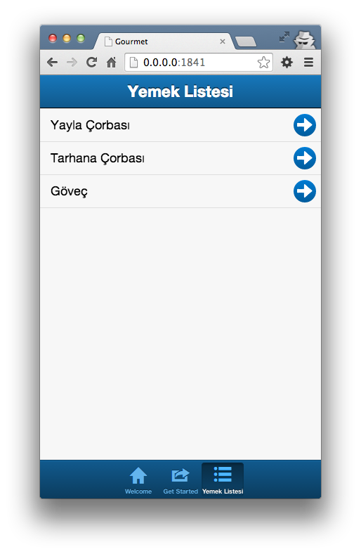
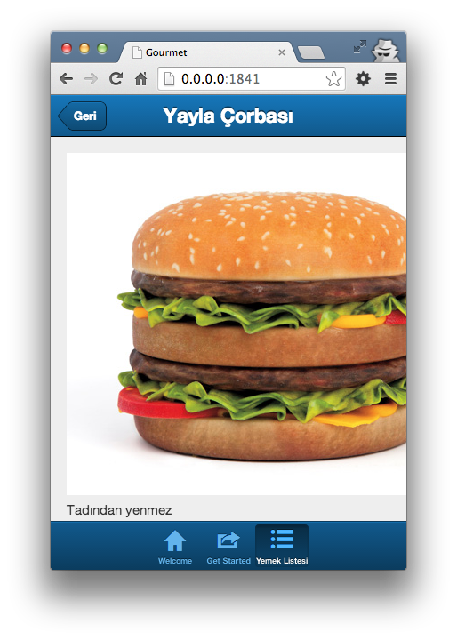

Sencha Touch ile Basit Liste Detay Uygulaması
Bu yazıda giriş seviyesinde Sencha Touch ile nasıl liste detay bir uygulama yapacağımızı göreceğiz.
Mac OS için sencha touch kurulumu:
- Sencha CMD’ yi indirip kuruyoruz.
- Sencha Touch dosyasını indirip belirli bir dizine açıyoruz.
- Yeni uygulama oluşturmak için sencha tocuh framework'ün bulunduğu dizinde olmalısınız.
Sencha CMD kurulduktan sonra sencha uygulamaları için kullanacağımız sencha komutu
~/bin/Sencha/Cmd/version_number/sencha
içerisinde tutulmaktadır. Daha rahat çalışabilmek için alias tanımlayabilirsiniz. ZSH kullanıyorsanız bunun için .zshrc dosyası içerisine
alias sencha ="~/bin/Sencha/Cmd/version_number/sencha"
satırını eklemeniz yeterlidir.
Komut satırından uygulamayı oluşturuyoruz.
sencha generate app -name Gourmet -path ~/Documents/projects/gourmet
Oluşturduğumuz uygulama dizinine gidip projeyi çalıştıralım.
sencha web start
Localhost 1841 portunda uygulamanın çalıştığını göreceksiniz. Uygulamanın içerisinde örnek bir tab ekranı vardır.

app/model dizinin içerisine Food isminde Food.js dosyası ile yeni bir model oluşturuyoruz.
Ext.define('Gourmet.model.Food', {
extend: 'Ext.data.Model',
config: {
fields: [
'id',
'name',
'picture',
'description'
]
}
});
Buradaki fields alanına apiden dönen değerlerden hangilerini okuyacağımızı belirtiyoruz.
app/store içerisine Foods.js dosyası ile Foods isminde yeni bir store oluşturuyoruz. İsminin Foods olması zorunlu değil.
Ext.define('Gourmet.store.Foods', {
extend: 'Ext.data.Store',
config: {
model: 'Gourmet.model.Food',
autoLoad: true,
proxy: {
type: 'ajax',
url: "data/foods.json",
reader: {
rootProperty: 'data',
type: 'json'
}
},
sorters: 'id'
}
});
model bağlı olunan model.
proxy alanı veriyi okuma, yazma vs. konuları için. Bu uygulamada verileri local bilgisayardan alıyoruz. API için url alanını değiştirmeniz yeterlidir.
sorters verinin hangi alana göre sıralı olacağını belirtir.
Oluşturduğumuz model ve store ları app.js içerisinde belirtelim. Bu işlemi ekleyeceğimiz diğer dosyalar içinde yapacağız.
models: ['Food'],
stores: ['Foods'],
Şimdi arayüzleri oluşturmaya geçelim.
app/view içerisine Foods.js dosyasını oluşturalım.
Ext.define('Gourmet.view.Foods', {
extend: 'Ext.navigation.View',
xtype: 'food_panel',
config: {
defaultBackButtonText: "Geri",
items: [{
title: 'Yemek Listesi',
// Buraya liste gelecek
}]
}
});
Oluşturduğumuz view'in yüklenebilmesi için Ext.Loader tarafından yüklenebilmesi gerekiyor. Bu işlem icin tüm view dosyalarının app.js icine dahil edilmesi gerekiyor. Bu aşamaya ilerleyen kısımlarda daha sonra değineceğiz.
NavigationView card layout ile birlikte oluşturulmuş basit bir container’ dır.
Şimdi bunu Main.js içerisinde hazır gelen tab panelin bir tabına yerleştirelim. Bunun için items dizisine aşağıdaki gibi bir item ekliyoruz.
{
title: 'Yemek Listesi',// Tab linklerinde görünecek isim
iconCls: 'list',
xtype: 'food_panel' // Food.js te verdiğimiz xtype
}

Listeyi oluşturalım. view altına FoodList.js dosyası oluşturuyoruz. Bu dosya Ext.List compenentinden extend edilecek.
Ext.define('Gourmet.view.FoodList', {
extend: 'Ext.List',
xtype: 'food_list',
config: {
title: "Yemek Listesi",
itemTpl: '{name}',
store: 'Foods',
onItemDisclosure: true
}
});
store: Verileri alacağı store.itemTpl: Verinin listede nasıl görüneceği. Burayı css ile özelleştirebilirsiniz. Birden fazla bilgi gösterebilirsiniz.'{name} - {description}'gibi.onItemDisclosure: Detay butonunun olup olmayacağını belirtiyor.Food.jsiçerisindeki items içerisine bu listeyi ekleyelim.
items: [{
xtype: 'food_list'// Buraya liste gelecek
}]

Detay butonu var ama çalışmıyor. Detay sayfası yapalım ve butona işlevsellik kazandıralım.
FoodDetail.js dosyası oluşturalım. Bu dosya Ext.Panel componentinden extend edilecek.
Ext.define('Gourmet.view.FoodDetail', {
extend: 'Ext.Panel',
xtype: 'food_detail',
config: {
styleHtmlContent: true,
scrollable: 'vertical',
tpl: "<img src='{picture}' /> <br /> <p>{description}</p>"
}
});
styleHtmlContent: Html içeriği otomatik stillendirir. Default false gelir.scrollable: Ekranın scrool özelliğini ne şekilde olacağını belirtir.tpl: Template içeriği buraya yazıyoruz. Template’ ler içerisinde bulunan componente setlenen data’ yı{key}şeklinde kullanmaya olanak sağlar.controlleriçerisindekiMain.jsadında bir controller oluşturup,Main.jsdosyasını aşağıdaki gibi düzenleyelim.
Ext.define('Gourmet.controller.Main', {
extend: 'Ext.app.Controller',
config: {
refs: {
foodList: 'food_list',
foodMain: 'food_panel'
},
control: {
foodList: {
disclose: 'showFoodDetail'
}
}
},
showFoodDetail: function(list, record) {
this.getFoodMain().push({
xtype: 'food_detail',
title: record.data.name,
data: record.getData()
})
}
});
refs: Bu alanda xtype ve id ye göre compenentleri alabiliyoruz.control: Compenetlerin event’ larının takip edildiği yer. Yukarıdaki örnektextype: 'food_list'olan componentindiscloseevent'inde(olayında) yapılacak işlemi belirtiyoruz.showFoodDetailmetodu,xtype: 'food_panel'olanExt.navigation.Viewcomponentin içerisine belirtilen özelliklerdeki view alanını(detay sayfasını) ekliyor.
Son olarak App.js dosyamızın içerisine view ve controllerlarımızı ekleyelim,
views: [
'Main',
'Foods',
'FoodDetail',
'FoodList'
],
controllers: [
'Main'
],
Verilerin yüklenebilmesi için kök dizinde data isimli bir klasör oluşturup, içerisine aşağıdaki örnek
foods.json dosyasını eklemeyi unutmayın.
{
"success": true,
"data": [
{
"name": "Yayla Çorbası",
"description": "Tadından yenmez",
"id": 1,
"picture": "http://static.dezeen.com/uploads/2013/03/dezeen_3D-printed-food-by-Janne-Kytannen_5.jpg"
},
{
"name": "Tarhana Çorbası",
"description": "Tadından yenmez",
"id": 2,
"picture": "http://static.dezeen.com/uploads/2013/03/dezeen_3D-printed-food-by-Janne-Kytannen_5.jpg"
},
{
"name": "Göveç",
"description": "Bol baharatlı",
"id": 3,
"picture": "http://static.dezeen.com/uploads/2013/03/dezeen_3D-printed-food-by-Janne-Kytannen_5.jpg"
}
],
"callback": null
}
Uygulamamız artık hazır.

Örnek uygulamanın tamamına buradan ulaşabilirsiniz.
comments powered by Disqus